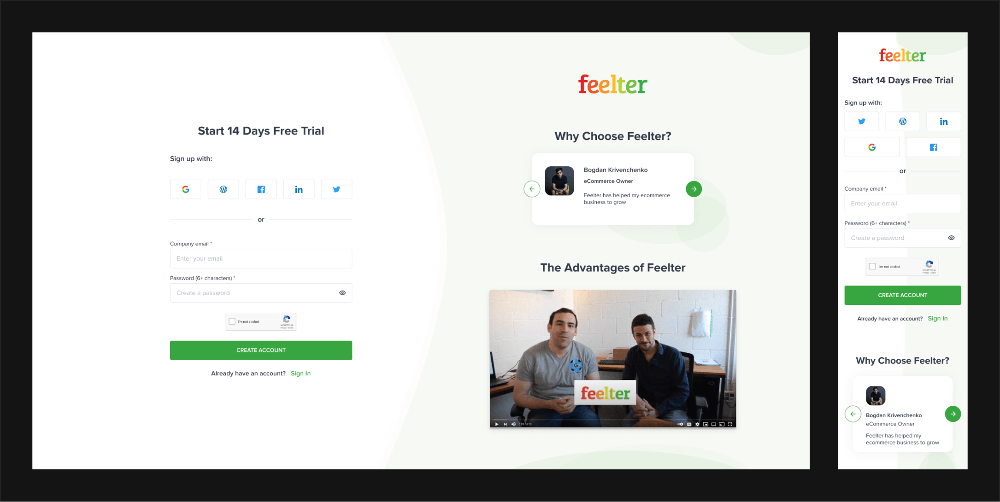
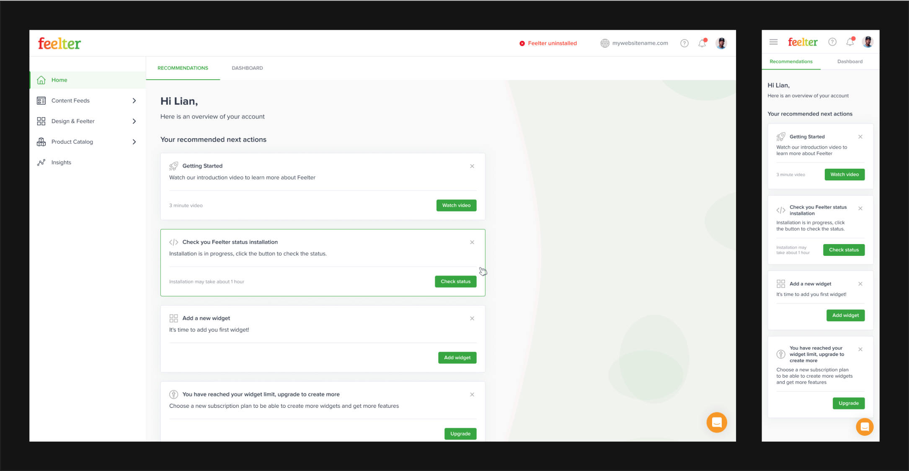
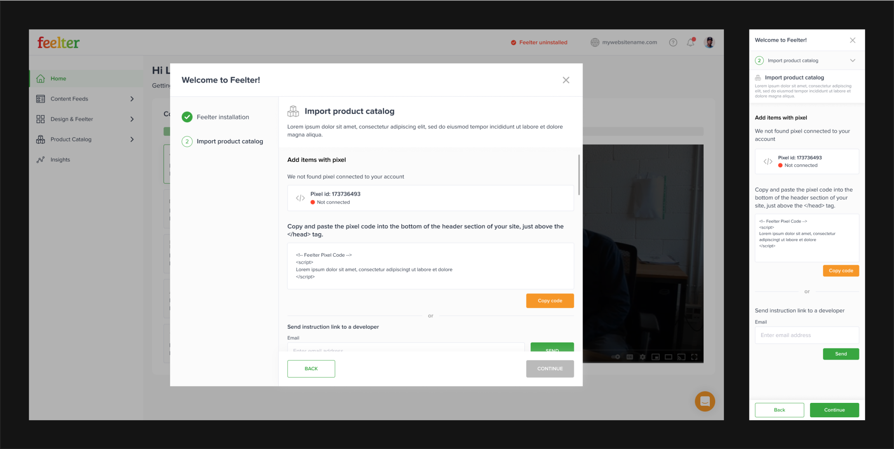
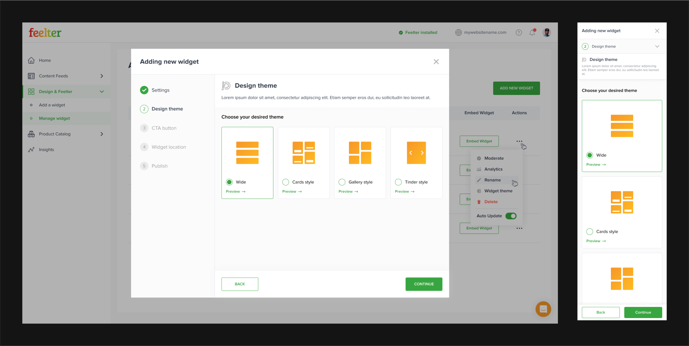
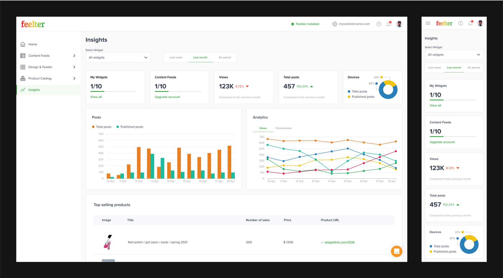
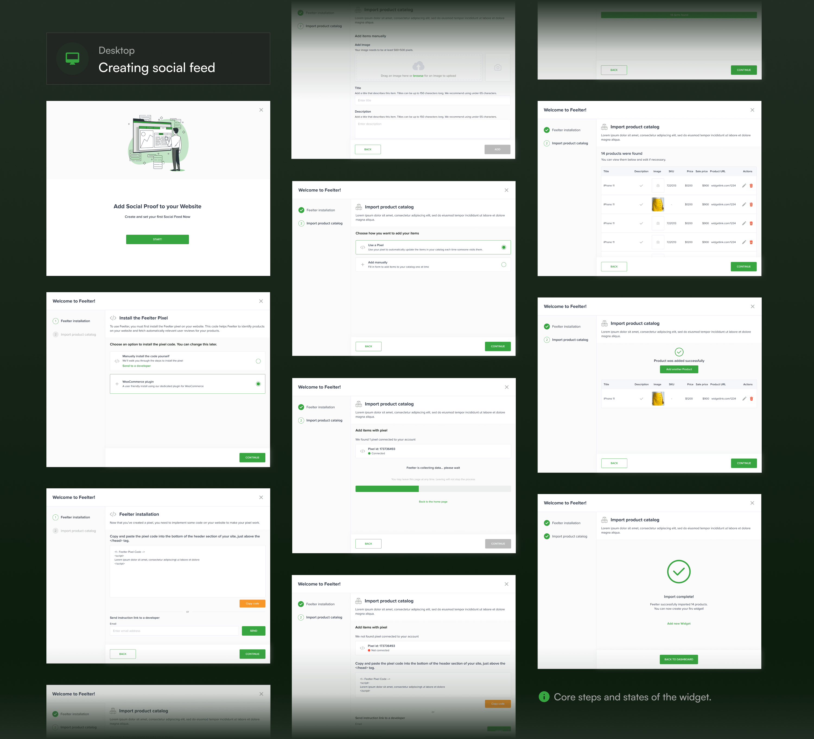
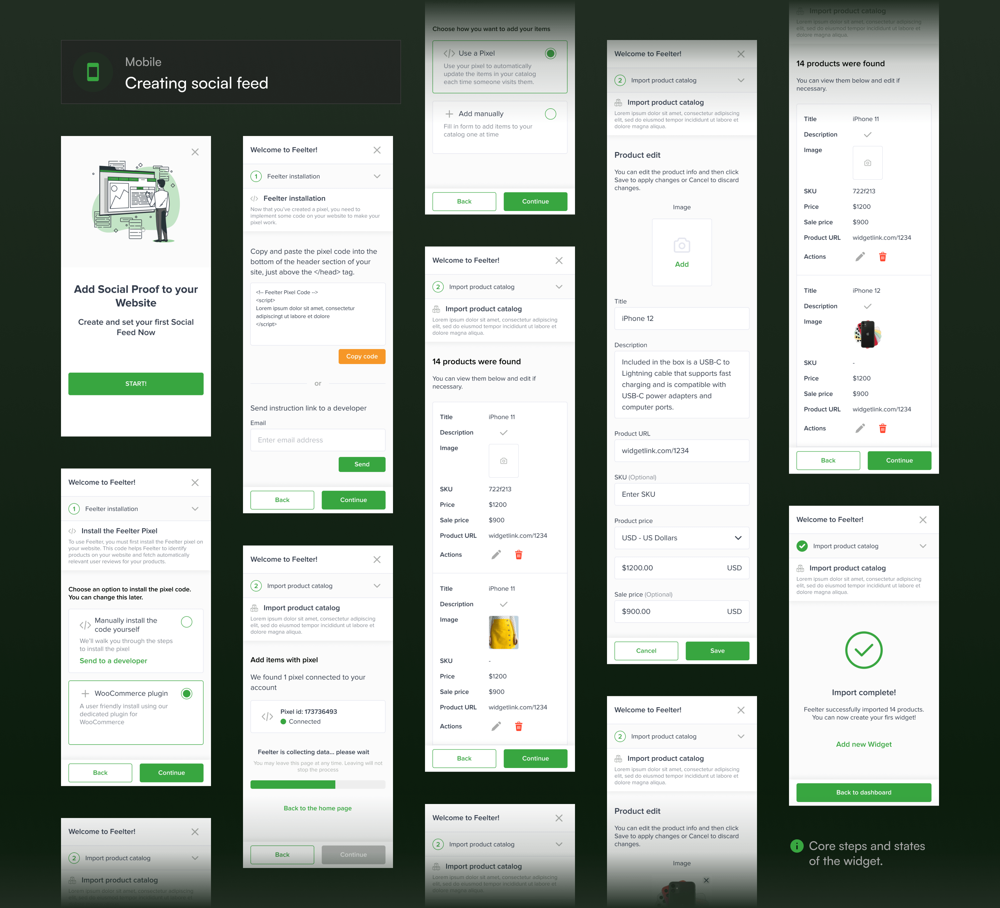
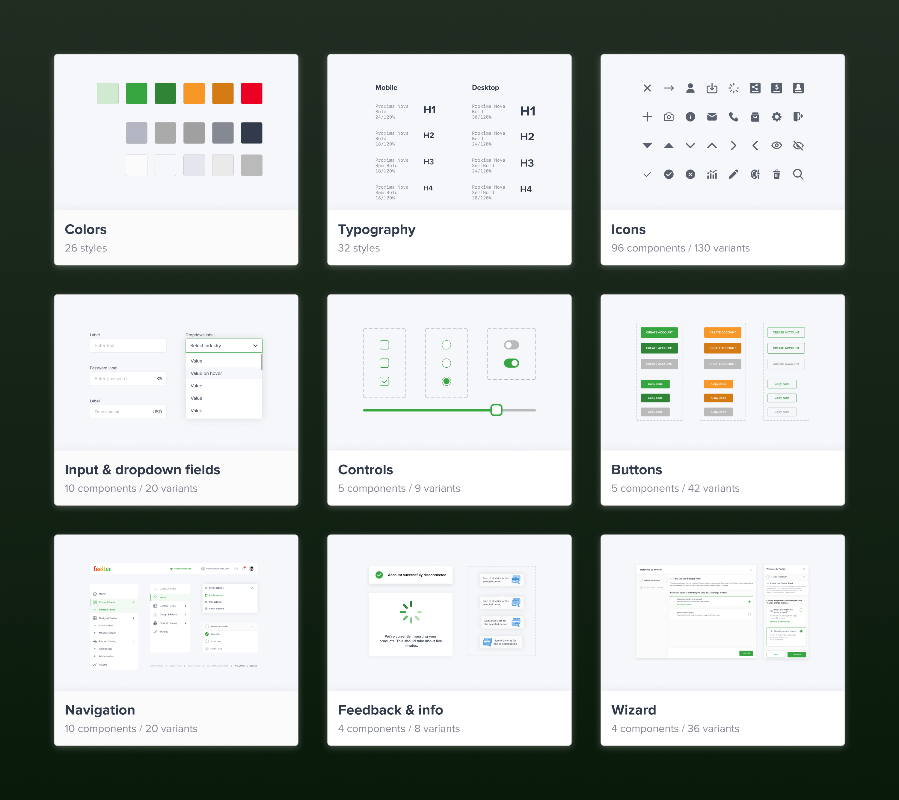

Feelter web application
eMode.Digital – June 2021
My role
UX/UI Designer – Conducting research, creating design assets, and collaborating with the team to meet customer goals.
Team
Lian Goldstein – Design manager
Developers team
Timeline & Status
2 months, Studio Project
Overview
Feelter has crafted an innovative widget that aggregates real-time social media reviews, providing businesses with a powerful tool to enhance credibility and enrich the customer shopping experience.
Recognizing the need to seamlessly distribute this widget, Feelter approached our studio with a request to develop a platform, that will allow businesses to install and manage the widget on their websites.
Highlights
Web application with mobile version
    Context
What is Feelter?
Feelter is a widget that connects to a website and provides live aggregated and filtered reviews from social media in form of a feed. The feed of the Feelter widget is created based on specific keywords or hashtags and then shown to the user.
How does Feelter work?
1
Scanning
Feelter searches and gathers millions of social media mentions.
2
Filtering
Our technology analyzes and filters all relevant information to ensure reliability and quality.
3
Calculating score
The relevant data transforms into one clickable score reflecting the true social media mentions.
4
Curating results
Our smart algorithms select the most engaging content, revealing the full picture in a minimal amount of mentions.
Discovery
Project requirements
The discovery phase began by meticulously gathering essential information. We collected insights from various resources for a comprehensive understanding of the specific problems that need to be solved and stakeholder requests that need to be addressed.
Product design specification
My manager supplied me with a product design specification, which included a brief product description, its purpose, and a definition of the project scope. This involved information about features, functionalities, limitations, and technical details, specifying the platforms, devices, and technologies to be used.
Development task list
Furthermore, the development team provided a thorough development task list. This list included task descriptions with concise overviews of necessary actions, a breakdown of the product's features, and explanations of how they should function.
Competitive audit
Before starting a competitive audit, we formulated some questions to guide our search for answers. These questions would help us grasp market standards, analyze our competitors, and gain insights from their practices.
Which similar products are already on the market, and which ones dominate the market?
What problems do these products solve and how do they solve them?
What interface elements do they use to implement products functions?
Research takeaways
After conducting the research, we received valuable information and ideas:
New user guidance
One competitor provides informational materials on the homepage for new users to familiarize themselves with the platform. This concept has potential for further development.
Onboarding wizard
All of our competitors utilize a wizard as a tool for users to install and configure their widgets.
Mobile-first
The audit highlighted that users predominantly access these platforms via mobile phones, underscoring the importance of creating a user-friendly mobile version for our product.
Navigation patterns
The market leaders share common navigation patterns, utilizing a side menu, top bar for account details, notifications, and a help center, with a dashboard as the central information hub.
Definition
Goal
In response to stakeholder requests and Product design specification, we established a clear product goal.
Design a user-friendly web solution for Feelter, enabling businesses to effortlessly install, customize, and manage the widget on their e-commerce websites, fostering effective use of social proof and enhancing online credibility.
Constrains
Drawing from the Product Design Specification and insights obtained during the competitive audit, we identified key constraints for our product.
Time constraints
The project must be completed within a 2-month timeframe.
Feature Implementation
Full implementation of all features and requirements outlined in the Product Design Specification.
User-Friendly Design
Considering diverse user technical backgrounds, the filter installation process should be designed for simplicity and accessibility.
Mobile Focus
Prioritizing the mobile version as the majority of potential users access similar products via mobile phones.
Industry Standards
Ensuring the product meets industry standards and surpasses competitors in usability, ease of use, and overall user experience.
Visual Identity
While allowing for visual enhancements, the new Feelter product must align with the company's visual identity.
Roles in design process
The team
In the project, I served as the primary executor of the entire design process within a team, under the supervision of my Design manager. Additionally, I maintained close collaboration with developers throughout the project.
Designer (Me)
- Conducting research and gaining insights into the product.
- Creating design assets, including wireframes, mockups, and prototypes.
- Collaborating with the art director and developers to ensure the designs meet customer goals and are feasible for implementation.
Design manager
- Overseeing the overall project timeline, milestones, and deliverables.
- Offering constructive feedback to ensure the project aligns with industry standards, accessibility, and other benchmarks.
- Communicating with stakeholders to ensure the product meets their goals.
Developers
- Contributing technical expertise and offering feedback on the feasibility and efficiency of design solutions.
- Providing additional information about the product and its features.
- Transforming wireframes into the final working product.
Schedule
Design Challenges
Challenge 1: New user guidance
New user guidance
One competitor provides informational materials on the homepage for new users to familiarize themselves with the platform. This concept has potential for further development.
Our competitor includes recommended actions on a dashboard for new users, guiding them to educational materials about the platform.
Considering our product's accessibility for users with varied technical knowledge, we aim to enhance user-friendliness. We plan to introduce recommended actions that guide users not only with product information but also with essential steps to activate the widget.
Types of recommended actions that are included in our product dashboard:
Info about the product
Brief insights and highlights providing users with key details about the product's features and functionalities.
Suggestions to perform necessary actions
Provide users with guidance on the necessary steps for installing the widget or enhancing its performance.
Crushual notifications
Important alerts and updates that demand immediate user attention.
Marketing materials
Promotional content and resources aimed at informing users of additional offerings.
Integrating recommended actions into the product dashboard assists in guiding new users and prevents them from a sense of confusion.
Challenge 2: Wizard
Onboarding wizard
All of our competitors utilize a wizard for the installation and configuration of their widgets.
Aligned with our main goal, we aim to design a product that allows users to easily install, customize, and manage the Feelter widget.
Based on competitive audit data, we noticed that industry leaders were widely using a wizard to help users set up widgets, which led us to consider this solution.
The analysis suggested that including a wizard would be a suitable decision for our project:
Reduced cognitive load
Users feel less overwhelmed and expend less cognitive effort during the process.
Error minimization
Breaking tasks into smaller steps minimizes the chance of user errors, ensuring accurate data input.
Optimized screen space
Each step having a separate page allows more screen real estate for better focus.
Efficient onboarding
Wizards streamline onboarding, enhancing the product's accessibility for new users.
We initiated the development of the wizard by comprehending the necessary steps a user should take to accomplish the goal.
Once the internal structure was established, we proceeded to define the external structure of the wizard.
Using a wizard as a tool for creating a widget allowed to reduce the cognitive load on users and protected them from making mistakes.
Challenge 3: Mobile-first
Mobile-first
The audit highlighted that users predominantly access these platforms via mobile phones, underscoring the importance of creating a user-friendly mobile version for our product.
Based on competitor analysis indicating a 70% mobile user base, our mobile-focused approach involves specific guidelines:
Cross-device accessibility
Design layouts, UI elements, and sizes for seamless user tasks on both mobile phones and desktops.
Responsive table design
Implement fully responsive tables to ensure accessible data presentation across diverse screen resolutions.
Interface System
Establish a system enabling dynamic interfaces while upholding coherence and consistent layouts.
Given the importance of the wizard, particular attention was paid to ensuring its ease of use on both mobile and desktop platforms, achieved by adapting the widget dimensions accordingly.
Adapting tables to various screen sizes was a challenge, especially considering our product's usage of tables with diverse data types. It was crucial to ensure their responsiveness without compromising the ease of user interaction with the tables.
It was crucial not only to adapt individual interface elements for various screen sizes but also to establish a cohesive system that guarantees consistency and uniformity in layouts across different devices.
Following the guidelines for a mobile-focused approach, we developed an interface that enables users to effectively address their needs on both desktop and mobile devices.
Delivery
Prototype
Mockups
 UI Kit
Project Takeaways
Data-driven decision making
Even when choices seem apparent, gathering data is crucial. In this project, research highlighted the necessity of prioritizing the mobile version, despite the initial inclination towards prioritizing big screens.
Ideas testing and enhancement
Competitor ideas should undergo testing and refinement. Ensuring a solution's suitability through testing is followed by the crucial step of improving these ideas before integration into the product.
Embracing best practices
When competitors unanimously adopt a specific approach, it's likely rooted in research. Implementing similar patterns acknowledges user familiarity and industry-wide best practices, as evidenced in this project's navigation choices.
Early team communication
Understanding the project's technical aspects was challenging. Interactions with the product owner and developers, starting from the beginning of a project, played a vital role in aligning design logic with technical feasibility.